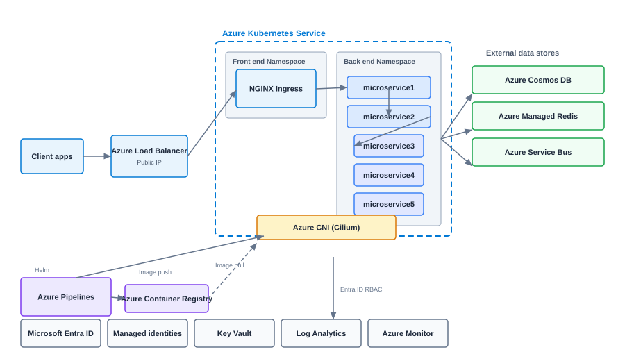

Microservices Architecture on Azure Kubernetes Service
How to design a production AKS platform with ingress, Azure Pipelines, managed data services, and Azure Active Directory integration.
While leading cloud architecture at VF Interactive, I designed several AKS platforms for clients moving from VM-based deployments to Kubernetes. The layout below mirrors Microsoft's recommended enterprise pattern with namespaces, managed services, and GitOps-ready CI/CD.

Traffic flow
Client apps reach a public IP on an Azure Load Balancer, which forwards traffic to an NGINX Ingress controller in the frontend namespace. Ingress rules route requests to backend microservices without exposing individual pods publicly.
Microservice layout
The backend namespace hosts a chain of services: microservice1 through microservice5 with clear separation between API, orchestration, and data layers. Azure CNI powered by Cilium provides performant pod networking and network policy enforcement.
CI/CD and images
Azure Pipelines builds and tests each service. Helm deploys chart releases into AKS. Container images push to Azure Container Registry and pull into the cluster on deployment.
Data and messaging
Managed Azure services handle persistence: Azure Cosmos DB for globally distributed document data, Azure Managed Redis for caching, and Azure Service Bus for reliable async messaging.
Security and operations
Azure Active Directory integrates with Kubernetes RBAC. Managed identities access Azure Key Vault without embedded secrets. Log Analytics, Application Insights, and Azure Monitor provide unified observability.
Implementation Checklist
Create AKS with Azure CNI and plan IP address space carefully. Integrate with Azure Active Directory for cluster admin access. Deploy ingress controller and cert-manager for TLS. Configure Azure Monitor container insights from day one. Use Azure Key Vault provider for secrets.
Production Hardening
Enable Azure Policy for Kubernetes. Use private clusters for production where network requirements allow. Separate node pools for system and user workloads. Apply pod disruption budgets for critical services.
When to Choose AKS
AKS is the natural choice for enterprises standardized on Azure with Microsoft identity, hybrid connectivity through ExpressRoute, and existing Azure DevOps pipelines. Evaluate AKS when Kubernetes portability matters but Azure managed services handle persistence.
Networking Deep Dive
Azure CNI assigns VNet IPs to pods, similar to AWS. Plan subnet sizes for nodes and pods together. Azure Network Policy or Cilium enforces east-west rules. Private Link connects to PaaS services without public internet exposure. ExpressRoute or VPN connects on-premises networks for hybrid workloads.
Observability Stack
Container Insights collects metrics and logs automatically. Application Insights provides APM with distributed tracing when SDKs are instrumented. Create workbooks that correlate ingress latency with backend service health. Alert on pod restart loops and OOMKilled events before users report outages.
Common Pitfalls
Adopting tools before defining outcomes leads to expensive experiments without business value. Copying another organization's architecture without understanding your constraints creates fragile systems. Skipping documentation means every new team member relearns lessons the hard way.
Getting Started
Define success metrics before implementation. Start with the smallest scope that proves value. Review results with stakeholders weekly during the first month. Iterate based on evidence, not assumptions.